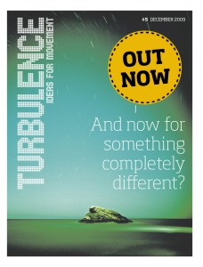

Turbulence Event at Bluestockings Bookstore in NYC, January 12
Turbulence editor Ben Trott will be speaking at Bluestockings Bookstore in New York City on Tuesday 12 January, 2010 at 7pm. He’ll be talking about the Turbulence project and presenting the argument made in ‘Life in Limbo?’, the editorial article in the recently released Issue 5.
{kind=link}
Suggested donation: $5
.
Address
Bluestockings, 172 Allen Street, New York, NY 10002. Map here.
Tadzio Released, But Still Facing Charges. Other Protesters Still Held
We’re very pleased to be able to tell you that Turbulence editor, Tadzio Mueller, who was arrested last Tuesday 15 December (background info: 1, 2, 3), was finally released from custody in Copenhagen this afternoon (Saturday 19, December).
We’ve released the following Press Release.
Tadzio still faces absurd charges which, of course, we’re demanding be dropped at once. There are also numerous other climate protesters who remain in custody. Sign the petition to demand their release here.
Hopefully, updates about the prisoners and how they can be supported will soon be able to be found at: Climate Justice Action | Indymedia Denmark | Modkraft.dk | Gipfelsoli
A petition demanding the release of Dr. Luca Tornatore has also been set up here.
UPDATE: Fellow Climate Justice Action spokespeople, Stine Gry Jonassen and Tannie Nyboe have finally been released. For a news report, see here. Sign the statement, ‘I too shouted PUSH at the Bella Centre Dec 16th’, in support of Stine and Tannie here.
Second Turbulence Press Release About Tadzio
As the campaign continues for the release of Turbulence editor Tadzio Mueller and others arrested at the UN Climate Conference in Copenhagen, we’ve issued another press release with details of the campaign’s development. The press release is available here as a PDF or in plain text here.
If you haven’t already, sign the petition demanding Tadzio and the others’ release here.
Turbulence Press Release about Tadzio
Turbulence have issued a press release about the nearly 2,000 signatures to the ‘Release Tadzio Mueller and the other climate prisoners!’ Open Letter in less than 24 hours.
The letter is online here. The press release is here as a PDF or here to read in plain text.
Sign the Petition Demanding Turbulence Editor Tadzio Mueller is Released
We’ve drafted the following Open Letter demanding the release of Tadzio Mueller, a Turbulence editor and spokesperson of Climate Justice Action, arrested in Copenhagen yesterday.
You can sign the letter here.
Release Tadzio Mueller and the other climate prisoners!
Over the past week, tens of thousands of people from across the planet have taken to the streets of Copenhagen demanding real and just solutions to climate change. But on the streets, as well as inside the UN Climate Change Conference, delegates and ‘outsiders’ alike are doubting that the conference will reach a deal that isn’t a disaster for most of the world.
Inside the Bella Centre, where the UN delegates are meeting, numerous critical voices have been marginalised through technical and procedural manoeuvres. Others, like Friends of the Earth International, have had their accreditation revoked. Outside, the policing of protest has been consistently draconian and occasionally brutal.
On Saturday 12 December, almost 1,000 participants in a ‘Climate March’ through Copenhagen were arrested. On Monday 14 December, hundreds more were arrested at a party in the city’s Christiania district following a public meeting, addressed by Canadian journalist Naomi Klein and others. On Tuesday 15 December, Tadzio Mueller, a spokesperson for Climate Justice Action, was arrested by undercover police officers following a press conference at the Bella Centre.
This morning, on Wednesday 16 December, Tadzio appeared before a judge on a number of charges relating to his public support for today’s Reclaim Power demonstration. The declared aim of Reclaim Power – also supported by social movements, many conference delegates and other civil society actors – is to hold a People’s Assembly at the Bella Centre, to discuss real solutions to climate change. At this morning’s court hearing the judge decided to hold Tadzio for a further three days, after which he will reappear in court. There are reports that the hearing was closed to the public.
Meanwhile, hundreds more protesters have been arrested today and there have been numerous reports of police brutality and the extensive use of batons, pepper spray and tear gas. We have also heard of further arrests of individual activists by undercover police officers.
We, the undersigned, not only lend our support to those in Copenhagen seeking to push for real and just solutions to climate change, but also demand the following:
- The immediate release of Tadzio Mueller and all other climate prisoners;
- A halt to the criminalisation and intimidation of activists, including the pre-emptive detaining of protesters in Copenhagen;
- The immediate re-instatement of accreditation withdrawn from NGOs and other critical voices at the Climate Summit
This Open Letter was drafted by the editors of Turbulence: Ideas for Movement, of which Tadzio Mueller is an editor.
Initial Signatories (name and affiliation)
- Ben Trott (Turbulence editor)
- David Harvie (Turbulence editor, University of Leicester)
- Michal Osterweil (Turbulence editor, US based lecturer, UNC Chapel Hill)
- Keir Milburn (Turbulence editor)
- Rodrigo Nunes (Turbulence editor)
- Kay Summer (Turbulence editor)
- Naomi Klein
- Katja Kipping (Member of the German Bundestag)
- Ulla Jelpke (Spokeswoman for internal affairs of the faction DIE LINKE in the Bundestag)
- Alexis Passadakis (Member of the Coordination Committee of Attac Germany)
- Dr. Simon Lewis (University of Leeds and UN accredited science advisor in COP15)
- Emma Dowling (Lecturer, University of London)
- Ingo Stützle (editor, ak – analyse & kritik)
- Zoe Young (writer and film maker)
- Friends of the Earth International
Add your name by clicking here!
Update on Tadzio Mueller’s Arrest
Tadzio Mueller, spokesperson for Climate Justice Action and a co-editor of Turbulence, was arrested yesterday in Copenhagen. He was in court this morning. We’ve been told by someone who was there that the judge said he was to be held for another 3 days and would then re-appear in court. We’ll have more information later today. Watch this space.
UPDATE: We’re putting together an Open Letter, calling for Tadzio’s release. We’ll have it up here in a few hours time.
Turbulence Co-Editor Tadzio Mueller Arrested in Copenhagen
After over a thousand arrests over the last few days, Tadzio Mueller, a spokesperson for Climate Justice Action and a co-editor of Turbulence has also been arrested at the Copenhagen climate summit. We’d like him back straight away, please! There’s no reason for holding any of those arrested. Let ’em out!
More information: Climate Justice Action | The Nation’s coverage | Modkraft.dk | Indymedia Denmark live newswire | Guardian live blog
Turbulence 5 now available in Glasgow
The new issue of Turbulence is now available in Glasgow. You should be able to find copies at Glasgow Social Centre and Glasgow Film Theatre. Many thanks to Stefanie for this!
{kind=link}
Help Distribute Turbulence 5 at Climate Demo in Copenhagen on Sat. Dec 12
We’re hoping to get rid of thousands of copies of Issue 5 of Turbulence at this Saturday’s (12 December) demonstration at the Copenhagen Climate Summit Demo. If you can help us out, that would be great!
{kind=link}
You can come and meet us at the corner of Bremerholm and Holmens Kanal, Copenhagen at 12.30pm on Saturday, half an hour before the demo begins. The meeting point is next to the National Bank where there’s a large sign reading ‘Financentre’ and a big, green statue of Niels Inel. We’ll be under the statue.
The demo starts not very far away at Christiansborg Slotsplads (Parliament Square), Copenhagen at 1pm.
You can find a map with both locations marked here.
If you can help out, please get in touch in advance at: editors@turbulence.org.uk
If you are already in Copenhagen and would like to grab a copy of the magazine, you can find out how here.
We’re looking for people to grab bundles to take back to their corner of the world with them, so again, get in touch if you can help us out with that.
Turbulence in the USA
Turbulence has now been printed in the United States. We’re still working on distribution – drop us a line if you can help. Many thanks to the Niebyl-Proctor Marxist Library in Oakland who are storing most of the 10,000 print-run. You should also be able get a copy from PM Press.
{kind=link}
-
Who we are

Turbulence is a journal/newspaper that we hope will become an ongoing space in which to think through, debate and articulate the political, social, economic and cultural theories of our movements, as well as the networks of diverse practices and alternatives that surround them. Read more here
-
Turbulence on Myspace